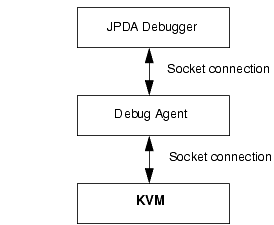

|
|
This document, KVM Debug Wire Protocol (KDWP) Specification, defines the debugger interface for Java Virtual Machine implementations that are intended to be compatible with Sun’s K Virtual Machine (KVM). KVM is commonly used as the underlying execution engine for the J2ME CLDC (Java™ 2 Micro Edition, Connected Limited Device Configuration) standard.
The KVM Debug Wire Protocol (KDWP) is the protocol that is used for communication between a Debug Agent (DA) and a CLDC-compliant J2ME Java Virtual Machine (usually KVM).
The high-level goal of the KDWP interface is to make it possible to plug a CLDC-compliant Java Virtual Machine flexibly into a Java development and debugging environment such as Forte.
The debugging interface specified in this document is intended to be compliant with the JPDA (Java Platform Debug Architecture) specification supported by Java 2 Standard Edition (J2SE™). Further information on the JPDA architecture is available at http://java.sun.com/products/jpda/. However, due to strict memory constraints, KVM does not implement support for the JVMDI (Java Virtual Machine Debug Interface) or the full JDWP (Java Debug Wire Protocol) specifications required by JPDA. Instead, KVM implements a subset of the JDWP known as KDWP.
The KDWP interface is derived directly from the JDWP Specification (see
http://java.sun.com/products/jpda/doc/jdwp-spec.html). Note that the command sets are numbered the same as the JDWP command sets and the commands in each set are numbered as per the JDWP. This allows an implementer to support more JDWP commands directly in the KVM if deemed necessary. Like JDWP, KDWP differs from many protocol specifications in that it only details format and layout, not transport.
KDWP was designed to be a strict subset of the JDWP, primarily based on the resource constraints imposed on the small devices. In order to make KVM run with a JPDA-compatible debugger IDEs without a huge memory overhead, a Debug Agent (also known as debug proxy) program is interposed between the KVM and the JPDA-compatible debugger. The Debug Agent allows many of the memory-consuming components of a JPDA-compliant debugging environment to be processed on the development workstation instead of the KVM, therefore reducing the memory overhead that the debugging interfaces have on the KVM and target devices. As obvious, the debugging interfaces can be turned off completely (at compile time) on those platforms/ports that do not need Java-level debugging support.
At the high level, the implementation of the Java-level debugging support consists of two parts:
The overall architecture for the Java-level debugging interface is illustrated in Figure 1. In that figure, the topmost box represents the JPDA-compliant debugging environment (“JPDA Debugger”) running on a development workstation. The debugger is connected to the Debug Agent that talks to the KVM.

The Debug Agent (DA) typically connects to the KVM via a socket connection. Similarly, the debugger connects to the Debug Agent over a socket. The debugger is unaware that it is connected to the Debug Agent. The debugger appears to be communicating directly with a JDWP-compliant Java Virtual Machine.
The KDWP protocol is designed to facilitate efficient use by a Debug Agent. Many of its abilities are tailored to that end. For instance, in some situations the Debug Agent may process the commands and issue a response directly back to the debugger without querying the Java Virtual Machine. If the command from the debugger needs data from the Java Virtual Machine, the Debug Agent communicates with the JVM via the KDWP to obtain the data. The completeness of the JDWP API that the Debug Agent provides depends on which debugger the implementer needs to support. Different debuggers may need different levels of support. The reference implementation from Sun supports a minimum set of commands that are needed by the Forte debugger.
The KDWP is packet based and is not stateful. There are two basic packet types: command packets and reply packets.
Command packets may be sent by either the DA or the target VM. They are used by the DA to request information from the target VM, or to control program execution. Command packets are sent by the target VM to notify the DA of some event in the target VM such as a breakpoint or exception.
A reply packet is sent only in response to a command packet and always provides information about the success or failure of the command. Reply packets may also carry data requested in the command (for example, the value of a field or variable). Events sent from the target VM do not require a response packet from the DA.
The KDWP is asynchronous. Multiple command packets may be sent before the first reply packet is received.
Command and reply packet headers are equal in size. This is to make transports easier to implement and abstract. The layout of each packet looks like this:
Header
length (4 bytes)
id (4 bytes)
flags (1 byte)
command set (1 byte)
command (1 byte)
data (Variable)
Header
length (4 bytes)
id (4 bytes)
flags (1 byte)
error code (2 bytes)
data (Variable)
All fields and data sent via KDWP should be in big-endian format. (See the Java™ Virtual Machine Specification for the definition of big-endian.) The first three fields are identical in both packet types.
length
The length field is the size, in bytes, of the entire packet, including the length field. The header size is 11 bytes, so a packet with no data would set this field to 11.
id
The id field is used to uniquely identify each packet command/reply pair. A reply packet has the same id as the command packet to which it replies. This allows asynchronous commands and replies to be matched. The id field must be unique among all outstanding commands sent from one source. (Outstanding commands originating from the debugger may use the same id as outstanding commands originating from the target VM.) Other than that, there are no requirements on the allocation of ids.
A simple monotonic counter is adequate for most implementations. It allows 2^32 unique outstanding packets and is the simplest implementation.
flags
Flags are used to alter how any command is queued and processed and to tag command packets that originate from the target VM. There is currently one flag bit defined. Future versions of the protocol may define additional flags.
0x80
Reply packet
The reply bit, when set, indicates that this packet is a reply.
command set
This field is useful as a means for grouping commands in a meaningful way.
The command set space is roughly divided as follows:
0 - 63
Sets of commands sent to the target VM.
64 - 127
Sets of commands sent to the debugger/Debug Agent.
128 - 256
Vendor-defined commands and extensions.
command
This field identifies a particular command in a command set. This field, together with the command set field, is used to indicate how the command packet should be processed. Together, these fields tell the receiver what to do. Specific commands are presented later in this document.
error code
This field is used to indicate whether the command packet that is being replied to was successfully processed. A value of zero indicates success. A non-zero value indicates an error. The error code returned may be specific to each command set/command.
Data
The data field is unique to each command set/command. It is also different between command and reply packet pairs. For example, a command packet that requests a field value contains references to the object and field ids for the desired value in its data field. The reply packet's data field contains the value of the field.
Detailed Command Information
In general, the data field of a command or reply packet is an abstraction of a group of multiple fields that define the command or reply data. Each subfield of a data field is encoded in big endian format (See the Java™ Virtual Machine Specification for the definition of big-endian.) The detailed composition of data fields for each command and its reply are described in this section.
There is a small set of common data types that are common to many of the different KDWP commands and replies. They are described in the following table.
Note – The commands in each command set are numbered to match the equivalent JDWP (Java Debug Wire Protocol) commands. Commands that are missing from the following list are presumed to be handled via the Debug Agent or are not necessary for minimal debugger functionality. Implementers could extend the KVM command set to handle more of the JDWP commands.
AllClasses (3)AllThreads (4)Suspend (8)Resume (9)Exit (10)
GetValues (6)
Superclass (1)SetValues (2)
ReferenceType (1)GetValues (2)SetValues (3)
Value (1)
Name (1)
Suspend (2)
Resume (3)
Status (4)
Frames (6)
FrameCount (7)
Stop (10)
SuspendCount (12)
Length (1)GetValues (2)SetValues (3)
Set (1)
Event types:
Class prepare Breakpoint Midlet death
Clear (2)
ClearAllBreakpoints (3)
GetValues (1)SetValues (2)
Composite (100)
Handshake (1)
Sends handshake string to KVM.
returns a 32 bit value that describes the capabilities of the KVM.
|
|
KDWP Specification KVM Debug Wire Protocol, 1.0 |
Copyright © 2002 Sun Microsystems, Inc. All rights reserved. Use is subject to license terms. Third-party software, including font technology, is copyrighted and licensed from Sun suppliers. Sun, Sun Microsystems, the Sun logo, Java and Solaris are trademarks or registered trademarks of Sun Microsystems, Inc. in the US and other countries. Federal Acquisitions: Commercial Software - Government Users Subject to Standard License Terms and Conditions.
Copyright © 2002 Sun Microsystems, Inc. Tous droits réservés. Distribué par des licences qui en restreignent l'utilisation. Le logiciel détenu par des tiers, et qui comprend la technologie relative aux polices de caractères, est protégé par un copyright et licencié par des fournisseurs de Sun. Sun, Sun Microsystems, le logo Sun, Java et Solaris sont des marques de fabrique ou des marques déposées de Sun Microsystems, Inc. aux Etats-Unis et dans d'autres pays.